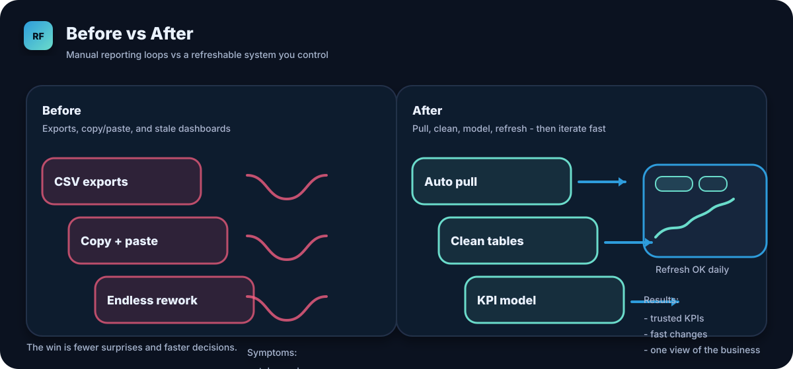
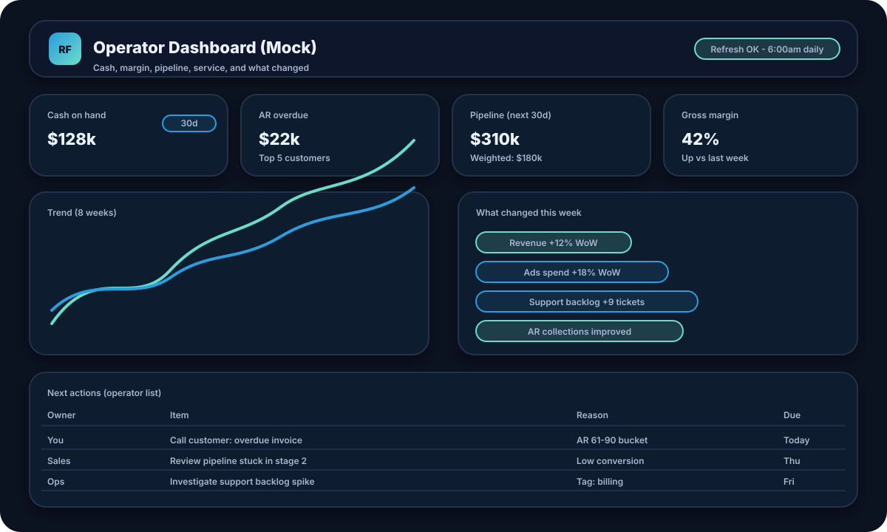

Example build: Profit and growth you can trust
Example 2: Ecommerce profit and growth, not vanity metrics
This example is for an SMB owner who sees revenue moving but still cannot answer the question: Are we actually making money after refunds, shipping, and ads?
Prefer the quick skim? Open the TL;DR version.



You combine Shopify orders with ad spend and basic SKU costs to get a clear view of contribution margin and what to change next week.
Step 1: Connect the sources
Typical sources:
- Shopify for orders, line items, discounts, shipping, and refunds.
- Meta Ads or Google Ads for daily spend and campaign performance.
- Spreadsheet for SKU costs (COGS), packaging, and simple shipping rules.
Start with exports if you need speed. Move to API pulls when you want consistent daily refresh.
Step 2: Build clean tables and consistent KPIs
Clean, reusable tables:
orders,order_lines,refundsad_spend_daily(by platform and campaign)sku_costs(from your sheet)
Operator-grade KPIs:
- Net revenue (after refunds).
- Gross margin by product and category.
- CAC and ROAS by campaign.
- Contribution margin after ads, shipping, and packaging.
- Top losers list: SKUs that sell but do not profit.
This is where most dashboards fail. If costs and refunds are not modeled correctly, the chart is pretty but useless.
Step 3: Publish a dashboard that answers operator questions
Questions you can answer in under 5 minutes:
- Are we buying growth or profitable growth?
- Which campaigns are making money right now?
- Which products should we push, and which should we pause?
- What changed this week, and why?
Suggested layout:
- Top row: Net revenue, Gross margin %, Contribution margin, Ad spend.
- Middle: ROAS by campaign, Margin by category, 8 week trend lines.
- Bottom: Products to review table with margin and refund rate.
What you end up with
- A dashboard that stops you from scaling the wrong products and campaigns.
- A repeatable model you can extend when you add a new sales channel.
- A clear weekly operating rhythm: review, decide, adjust, refresh.